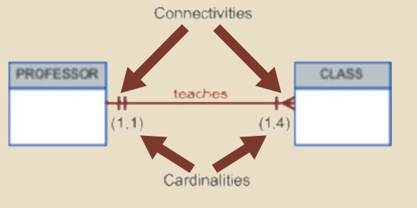
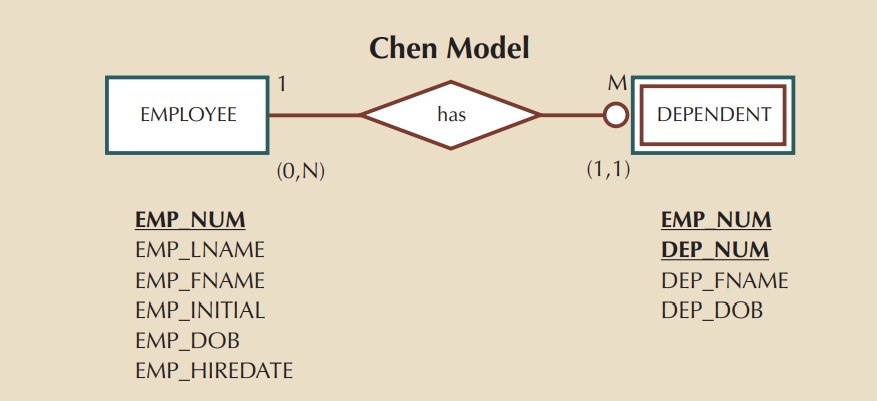
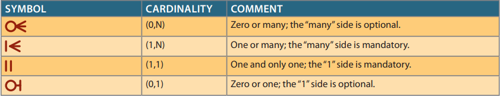
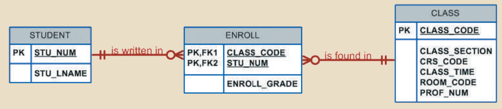

資料庫管理
資料庫管理
基礎資料庫系統介紹
名詞通常為實體，動詞通常為關係，關係是雙向的
Entity(實體)：可被收集、儲存的人、事、時、地、物
Attribute(屬性)：實體的特色(ex. 人的姓名、性別等，教室的位置、座位數等)
不同實體具有不同屬性
Relationship(關係)：實體間關聯的描述
one to many (1:M,1..*) ex. 媽媽對兄弟姊妹+自己
many to many (M:M,*..*) ex. 員工and技能
one to one (1:1,1..1) ex. 配偶
many to many ex：有員工A、B，技能有A、B、C，員工A會技能A、B，員工B會技能A、B、C，技能A有員工A、B會，技能C有員工B會
Constraint(限制) ex. M > 10, M <= 30
用語：
schema：整個資料庫，包含table、index、view…等
subschema：資料庫中的一部份, ex：整個大學中的某個系
RDBMS(關聯式資料庫)：透過共享欄位來串聯
ERD：描述實體與實體間的圖型
資料型態、key介紹
每一列代表一個實體
每一欄代表一個attribute
Data value：每個欄位的值
每一欄必須為相同資料格式
Domain：欄位值的範圍
Data type：
Numeric 數字
Character 文字
Date 日期
Logical 邏輯(布林)值
Key：確保資料的一致性、完整性、並建立表之間的關係
Primary key 主鍵(主鍵必須具唯一性)：負責決定其他attribute的值
Dependency(相依性)：主鍵決定其他欄位的值，其他欄位相依於主鍵
主鍵+任意欄位值，可以組成組合鍵
多個任意欄位值可組成組合鍵
Composite key(組合鍵)：由多個key attribute組成，組合鍵內每一個值都是一個key attribute
Super key：可以決定同一列中其他值的key(ex. primary key、composite key)
Candidate key(候選鍵)：將super key最小化，移除不需要的key attribute
Foreign key：將A表格中的primary key新增到另一表格中，使另一表格能夠參照(關聯)到A表格(外來鍵可以是空值、重複)
Secondary key：用來作為查詢的依據，可不具唯一性
Entity integrity(實體完整性)：確保實體具有唯一性，且某些情況不能出現Null值
Referential integrity(參照完整性)：A表格參照到另一表格所用的值，該值在另一表格中必須存在
語法：
Select：篩選水平資料
Project：篩選垂直資料
Union：將資料表整合(垂直增加)
Intersect：篩選出交集的資料
Difference：篩選出差異的資料
Product：將資料表整合(水平相乘)
Left outer join：有空值的放底下，空值靠右
Right outer join：有空值的放底下，空值靠左
ERM
ERM中的實體，代表一個表格(a table)
ERM中每個方框，代表一個實體，title為表格名稱，內容為attribute
Required attribute(必填)：必須要有值，且不能為空，在ERM中標示粗體字
Optional attribute(選填)：非必須填寫的欄位，ERM中不一定為粗體
Domain：attribute的可能值範圍
Identifier(PK)：用來決定其他欄位的值
加底線：代表鍵屬性(具有唯一性)
ex.課程(實體)，課程編號(鍵屬性、主鍵or外來鍵)

一門課最多1~1位老師教，一個老師最多教1~4門課
Foreign key到另一表中，若一定要有值，為Existence dependence(存在相依)，若無則為Existence independence(存在獨立)
A資料表中，若主鍵中(組合鍵)包含另一資料表中的主鍵，為強關係，若無則為弱關係
弱關係使用虛線連接

弱實體(用雙線作為實體方框，且關係線需用圓圈)：必須有存在相依，且主鍵為其他表格的主鍵(強關係)

圈圈為optional(可有可無)的意思
Recursive遞迴：單一表格參照到自己
處理多對多關係的方法：加入一張作為橋接的表格

1. 加入一實體，且該實體與原本的實體關係為1對多
2. 該實體的主鍵多為組合鍵，將原本多對多實體中的主鍵作為新增實體的組合鍵
3. 若有需要，可以新增attribute(ex. ENROLL_GRADE成績)
資料限制介紹
Subtype會繼承supertype的屬性及關係(subtype也會有supertype對其他entity的1對多等關係) ex：三種不同種類的員工，都會將employee的屬性及關係繼承下來
Specialization特殊化：
Entity type的屬性中有一些屬性不是所有零件都有的，則將此Entity type特殊化，產生subtypes。
Disjoint rule不相交原則：
一個Supertype不能同時屬於兩個(或以上)之Subtype (Subtype沒有交集，為Sample屬性)，符號以圈圈中標示”d”。例如 : 病人只能是門診病人或住院病人
Overlap rule重疊原則 :
一個Supertype可能同時屬於兩個(或以上)之Subtype (Subtype有交集)，符號以圈圈中標示”o”。例如 : 零件可以是購買來的或是自行製造來的
Completeness constraint完整性約束：
探討一個Supertype是否必須至少屬於一個Subtype
Partial completeness部分完整：
means that not every supertype occurrence is a member of a subtype
意味著不是每個supertype出現都是一個subtype成員的； 某些supertype出現可能不是任何subtype的成員
Total completeness全部完整：
means that every supertype occurrence must be a member of at least one subtype
意味著每個supertype出現必須是至少一個subtype的成員
使用組合鍵的時機：
1. 處理多對多關係時
2. 處理弱實體時
Surrogate代理鍵：
主鍵為自動編號，ex：輸入第一筆時，自動帶入編號1
正規化
利用正規化來評估及更正表格結構
去正規化(Denormalization)：
Result in increased performance and greater data redundancy
獲得更高的效能，但會造成更多的資料冗餘
1. 每個表代表一個值
2. 每個交會點只會有一個值
3. 資料只會被更新在一個地方
4. 表中非主鍵的的屬性都依賴於主鍵(相依於主鍵)
至少做到3NF，大部分也製作到3NF而已
1NF：單個儲存格內不能有複數筆資料、將PK定義出來
2NF：1NF + 無部份相依(partial dependency)
部分相依：組合鍵(A+B)可以決定屬性(C、D)，但B可以單獨決定C當1NF為組合鍵時，及須使用2NF，若PK即為單一個屬性，該表格即為2NF
3NF：2NF + 無傳遞相依(transitive dependency)
傳遞相依：A為主鍵，B相依A，C相依B→C傳遞相依A，C完全是由B決定的
透過將有傳遞相依的屬性移置另一新表格中，ex：將B及C移置新表格，並透過將B作為FK放入A所在的表格中
Derived Attributes(衍生屬性)：透過其他屬性計算出的屬性，ex：透過數量屬性及單價屬性，計算出總價屬性
基礎搜尋語法
資料型態(data type)：
char(10) 指定大小10字元
varchar(10) 最大字元為10，小於10時會刪減成輸入字元數
語法：
select查詢指定屬性
from 指定select的資料表 ex：select * from A_table
where 指定條件 ex：select * from A_table where name = name1
group by 將具有相同值的資料群組
having 篩選符合group by的條件
order by 排序(升序或降序) ex：order by price desc(大到小)/asc(小到大)
distinct 返回指定欄位，且不重複
natural join 合併資料表 ex：select A_table.name, B_table.num from A_table natural join B_table;
left join on 透過指定欄位(指定條件寫在on後)，合併資料表 ex：select A_table.name, B_table.num from A_table left join B_table on A_table.id = B_table.id(指定條件)
right join on 透過指定欄位(指定條件寫在on後)
left join = 將B_table join 到A_table
right join = 將A_table join 到B_table
join using 不須在屬性前增加table name即可合併 ex：select name(在A_table中),b_id(在B_table中),num(在B_table中) from A_table join B_table using(b_id)透過b_id，將b_id及num加入到A_table中
AND、OR、NOT：AND先做，除非OR有用括號，NOT：條件反轉
BETWEEN： ex：num BETWEEN x AND y = num>=x,num<=y
IN：篩選符合的值 ex：select name from A_table where name IN(name1,name2) 篩選出name1及name2的欄位